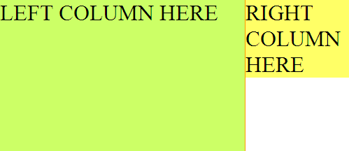
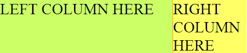

Двухколоночный макет, тянущийся, по вертикали (CSS only)
Задача: нужно сделать двухколоночный макет так, чтобы обе колонки имели одинаковую высоту (были растянуты по вертикали).
О чем это он? о_0
Доброго времени суток. Сразу хочу объяснить что же я имею в виду. Вы конечно же верстали двухколоночные шаблоны тянущиеся по вертикали, со статической длинной и так далее. И конечно же Вы сталкивались с проблемой, которую я хочу рассмотреть в этой статье.
Вступление
Мы верстаем двухколоночные макет для маленького блога или даже микроблога, не побоюсь этого слова. Идеальный пример - Twitter.com. Зайдите на этот сервис и посмотрите на макет. Высота колонок одинаковая не зависимо от их содержимого.. они просто всегда равны. Еще и бордер в придачу между ними.. такие возможности дает нам табличная верстка. Просто один рядок и две ячейки. Таблица сделает все за Вас.
К сожалению я не любитель такой верстки - верстки таблицами... это конечно семантически корректно и очень просто, но все же я задался целью сделать это DIV'ами.
Проблема
Главная проблема заключается в том, что при разном содержимом наши колонки будут иметь разную высоту. Смотрите скриншот:

Видите? Я поставил немного переносов строк и получилось вот ЭТО. Никуда не годится.. то же самое получается и с другой колонкой...
Цель
Как Вы уже поняли, цель заключается в том, чтобы сделать колонки тянущимися, или, легче будет сказать, "всегда одинаковыми по высоте вне зависимости от содержимого".
Приступим
Для начала, как я всегда делаю, представлю Вам HTML код:
<div class="page">
<div class="leftcol">
LEFT COLUMN HERE
</div>
<div class="rightcol">
<div class="content">
RIGHT COLUMN HERE
</div>
</div>
</div>
Как Вы можете наблюдать, я создал общий контейнер для моих колоночек :). Они живут в страничке, у них статическая длинна и они разноцветные. Вот кстати нужный нам CSS код:
.page { background:#ffff66; width:500px; overflow:hidden; }
.leftcol {
float:left; background:#ccff66;
width:350px; border-right:1px solid #ff9900;
}
.rightcol { padding-left:350px; background:#ccff66; }
.rightcol .content { background:#ffff66; border-left:1px solid #ff9900; }
Все и без меня ясно, но я вставлю свои пять копеек. Главному контейнеру (page) мы ставим фон желтого цвета, это на тот случай если наша правая колонка будет короче левой.
Левая колонка принимает свойства float со значением left и фон, свой собственный фон - зеленый, длинна - 350 пикселей.
Правой колонке установим значение padding-left равным ширине левой колонке - 350 пикселей и ЗЕЛЕНЫЙ фон. ВАЖНО установить именно padding, а не margin, так как наша колонка не будет страховать левую в том случае если та будет короткой.
Внутри контейнера с правой колонкой я создал еще один блок, который и будет иметь свой правильный ЖЕЛТЫЙ фон.
Не забудьте про overflow:hidden у элемента .page. Это исправляет неправильное вычисление браузером высоты этого блока. В противном случае все будет как на предыдущем скриншоте.

Вот и он!!! Попробуйте подобавлять немного содержимого куда-либо.. все будет отлично! Кстати, я совсем не упомянул о бордере.. На левую колонку ставим border-right, на вложенный блок правой - border-left. Верстка кроссбраузерная (ИЕ6 тоже)!!! Никаких таблиц и javascript'a.
Хух... долго здесь ничего не писал... надеюсь кому-то это будет интересно и может даже пригодится... исправляйте, если есть ошибки... Спасибо...